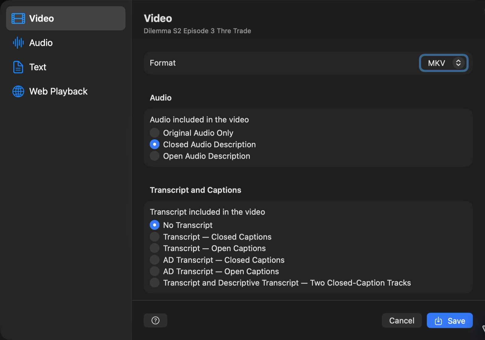
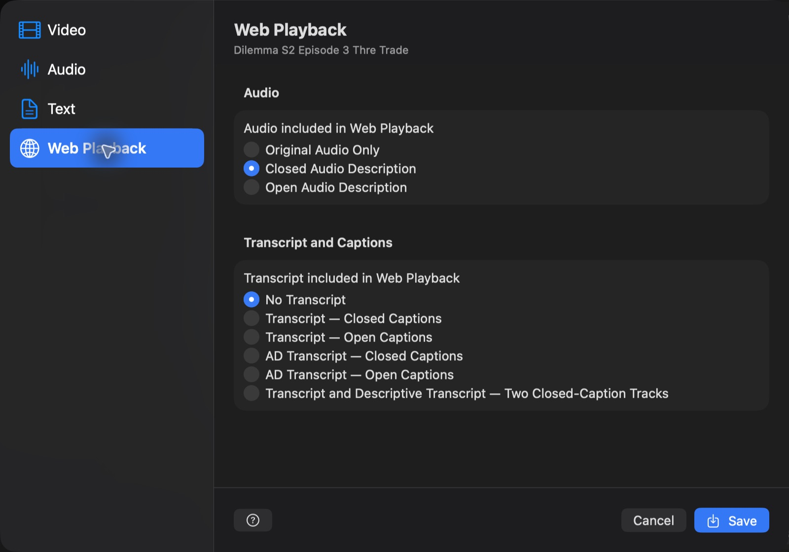
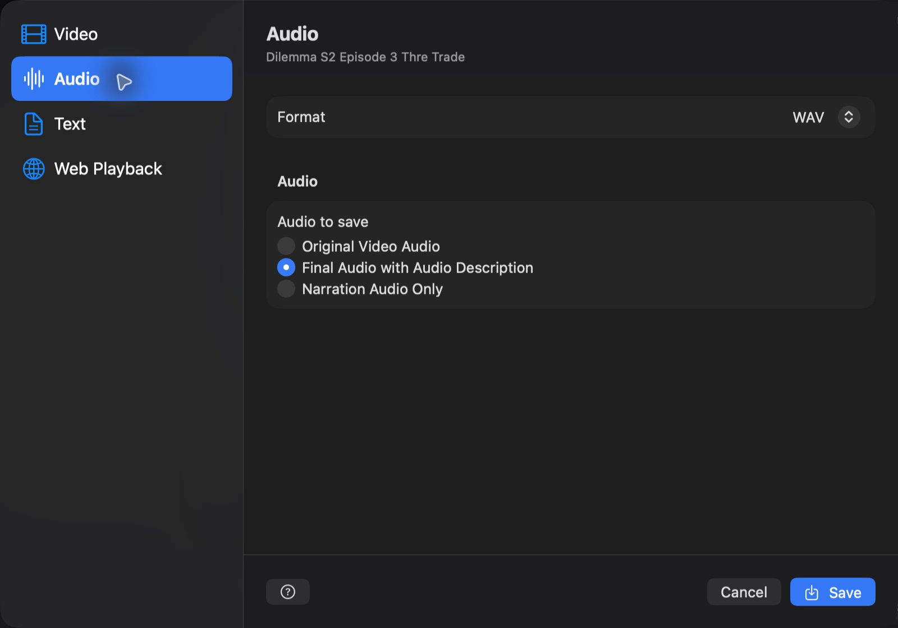
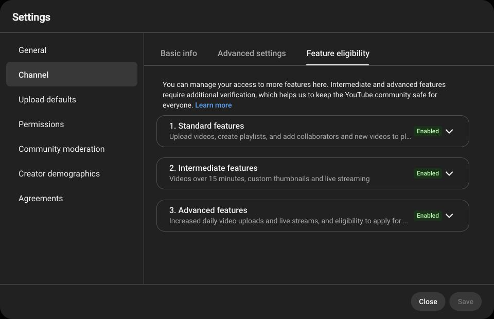
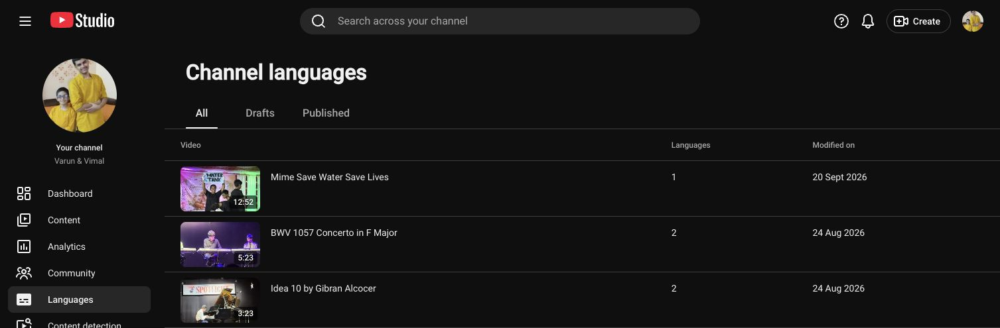
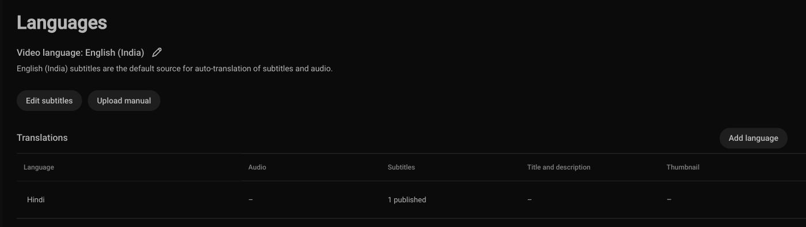
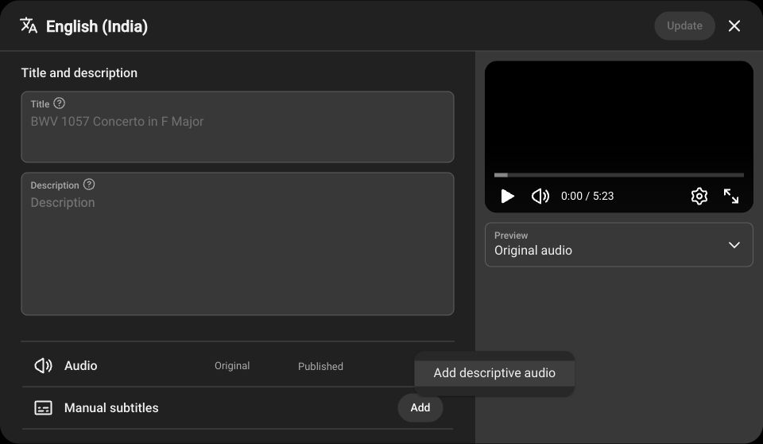
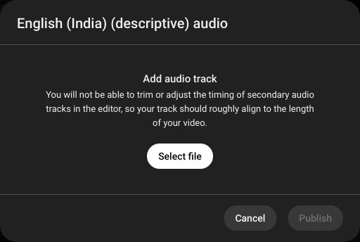
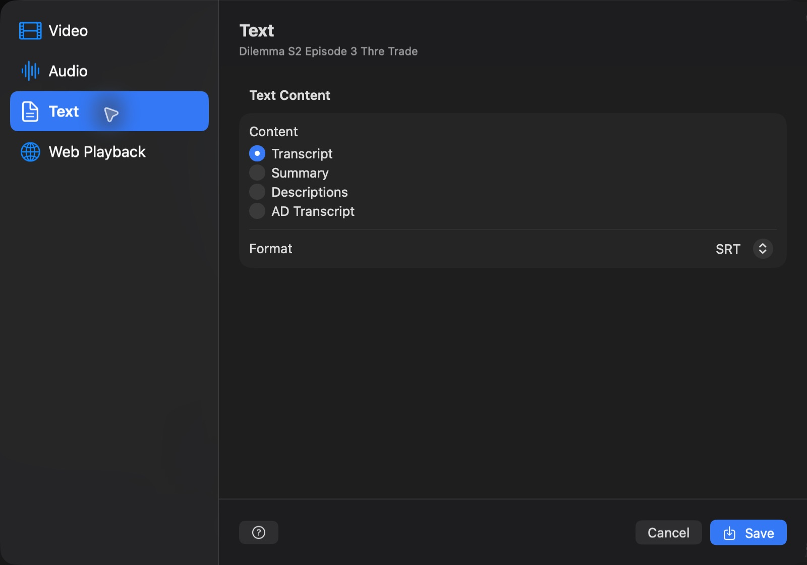

Choose Export in the inspector, a project's right-click menu, File > Export, or press Command-Shift-E (Mac) / Ctrl-Shift-E (Windows) while a project editor is active to open one dialog. Its left sidebar contains Video, Audio, Text, and Web Playback. The right pane changes with the selected category, and Cancel and Save remain at the bottom. Choose the question-mark button in the lower-left corner at any time to open this Export Help topic. Every Export command opens the same dialog for that project. Each unavailable choice is disabled. Audio Description and narration choices require current generated audio for every AD segment. Transcript and caption choices require the corresponding text; AD Transcript requires both transcript and descriptions. Save is disabled when the selected combination is unavailable. Original audio does not require descriptions or narration.
After you choose Save, the Export dialog closes and a status banner appears in All Projects, project editors, and Settings. Each active export shows its project name, a spinning indicator, its current step, and a progress bar. Video and audio progress follows the media being processed; Web Playback progress includes all video sizes and audio tracks. During work with an unknown duration or download size, the bar shows activity until progress is available. The indicator stays visible through file checks and final packaging. Choose Cancel Export to stop that session; it shows Cancelling until the work has stopped. Finished exports remain available.
Closed means the viewer can turn the feature on or off in a compatible player. Closed Audio Description is a separate described audio track, and closed captions are a separate caption track. Open means the feature is permanently included: Open Audio Description is mixed into the soundtrack, and open captions are rendered into the picture. Use closed options when viewers should control their experience; use open options when the description or captions must always be present.
Transcript contains the video's spoken dialogue. AD Transcript combines that dialogue with the Audio Description text in chronological order. These text choices are independent of the audio choice, so you can create any useful combination of Audio Description and captions.

Choose a Format: MKV (selected by default), MP4, MOV, or M4V. All four support the available audio and caption choices. MKV uses selectable SubRip caption tracks; MP4, MOV, and M4V use selectable timed-text tracks. All video audio tracks use AAC: an existing AAC source track is kept, and other audio is converted to AAC. Original and described soundtracks have distinct names. Descriptive transcript tracks have their own labels and accessibility flags. MOV, MP4, and M4V also receive Apple accessibility metadata for original, open-description, and closed-description exports and their captions. Playback support depends on the player. Video has two option groups. Under Audio, choose Original Audio Only, Closed Audio Description, or Open Audio Description. Closed Audio Description keeps the normal soundtrack and adds a second soundtrack that viewers can choose. Open Audio Description permanently includes narration in the soundtrack. Original Audio Only keeps the normal soundtrack.
When you add audio or closed captions, VidiStudio keeps the original picture unchanged, including its 4K and HDR quality. If the original picture cannot be kept safely, the export stops instead of quietly lowering its quality. Open captions are different because they become a permanent part of every picture. VidiStudio creates a new video with the same picture size and preserves HDR where possible, but some original quality or phone-recorded Dolby Vision information may change. Before this starts, VidiStudio gives a plain-language warning and recommends closed captions for the closest match to the original.
Under Transcript and Captions, choose No Transcript, Transcript with Closed Captions, Transcript with Open Captions, AD Transcript with Closed Captions, AD Transcript with Open Captions, or Transcript and Descriptive Transcript with two closed-caption tracks. The two-track choice lets viewers switch between the standard transcript and a descriptive transcript containing both dialogue and visual descriptions. Closed captions can be turned on or off; open captions are permanently included using the appearance chosen in Settings. Original Audio Only with No Transcript is unavailable because it would create another copy without adding an accessibility feature.
Review and generate narration before saving a described export. If some narration is missing, cancel to generate it or choose to continue with the available narration. Video export requires a local source video and is not available for a project that contains only a YouTube link.

Web Playback keeps the same three Audio choices and six Transcript and Captions choices as Video, but creates one HTTP Live Streaming (HLS) folder for online playback. The highest H.264 rendition keeps the source video's complete resolution. VidiStudio then adds every smaller standard tier that fits: a 4K source produces 4K, 1080p, 720p, and 480p; a 1080p source produces 1080p, 720p, and 480p; and a 720p source produces 720p and 480p. Smaller videos are never enlarged. The folder also contains AAC audio playlists, media segments, a master master.m3u8 playlist, a ready-to-serve Video.js index.html, and hosting instructions. HDR sources keep their resolution but are tone-mapped to standard dynamic range for broad H.264 browser compatibility.
Closed Audio Description becomes two selectable HLS audio renditions: Original Audio is the default, and Audio Description in the selected language is marked as an accessibility track. Open Audio Description creates one described soundtrack that every viewer hears. Closed Transcript or AD Transcript choices become selectable WebVTT tracks; the two-track choice includes both. Open captions are permanently rendered into every adaptive video rendition. All combinations and content requirements remain the same as in Video.
Upload the complete folder without renaming or moving its contents and serve it over HTTP or HTTPS. Configure your server for application/vnd.apple.mpegurl on .m3u8, video/mp2t on .ts, and text/vtt on .vtt. If the player and media are on different origins, allow cross-origin GET requests. Higher-resolution renditions take longer to generate and require more storage and bandwidth. Web Playback requires a local source video and is unavailable for URL-only YouTube projects.

Choose a Format: WAV (selected by default), MP3, or M4A. WAV uses uncompressed 24-bit audio; MP3 uses 320 kbps audio, and M4A uses 256 kbps AAC audio. These formats are available for every audio choice in local and YouTube projects. Choose the audio content separately: Original Video Audio saves the local video's soundtrack; Final Audio with Audio Description includes that soundtrack and synchronized narration; Narration Audio Only saves timed narration with silence between descriptions. The first two local choices require a local video; narration-only export is available whenever synchronized narration exists.
For a YouTube project, Audio offers these choices in order: YouTube Audio Only, Narration Audio Only, and YouTube Audio with Narration. YouTube Audio Only exports the selected original soundtrack without narration; it does not require generated descriptions or a known project duration. Narration Audio Only saves the timed descriptions with silence between them. To create the complete described soundtrack for YouTube Studio, choose YouTube Audio with Narration and select MP3 in Format. This choice becomes available when the project has a duration and either complete generated narration or imported AD audio. For a video you own or have permission to use, VidiStudio uses your chosen original audio source and mixes in narration at the saved times, or uses an imported full AD mix directly. Dialogue, music, and sound effects remain in the complete audio file; their volume lowers only while narration speaks. The first successful YouTube soundtrack extraction is saved in the project’s youtube-audio folder. Later original-audio and described-audio exports reuse that file, including after reopening or moving the whole project, changing narration or export format, or retrying a failed mix. Missing or damaged saved audio is downloaded again. Completed extractions are retained after export failure or cancellation; incomplete downloads and temporary processing files are removed. VidiStudio checks imported original audio against the video duration; a difference over 0.1 seconds requires your confirmation, as explained below.
On a computer, sign in to YouTube Studio using the channel that owns the video. Open Settings > Channel > Feature eligibility to see the channel’s status. For intermediate features, open Intermediate features > Verify phone number and enter the code sent by text or phone call. For advanced features, after phone verification, build sufficient channel history or, if offered, open Advanced features > Access features and follow the ID or video verification steps. Only the channel’s primary owner can complete identity verification; ID and video options are not available to everyone. Follow YouTube’s Community Guidelines to maintain access.

YouTube’s guidance says creators with multi-language audio access can add descriptive tracks; its eligibility guidance also refers to Advanced features. Availability can vary, so check whether Languages and Descriptive audio are available for your channel and video. Advanced feature access alone may not guarantee that the upload option appears. See YouTube’s feature eligibility instructions and audio description instructions for current requirements.
The public verification check mark beside a channel name is separate from feature eligibility and is not required for this workflow. Applying for that badge generally requires 100,000 subscribers, two-step verification and a complete channel profile; see YouTube’s verification badge guidance. A Gemini API key and connecting a Google account to VidiStudio do not verify a YouTube channel or enable YouTube features.




To replace an existing descriptive track, select the video and language in Languages, delete the existing track under Descriptive audio, and upload the replacement. If the option is missing, check feature eligibility and the original or dubbed language track; YouTube controls availability. Consult its linked instructions for current details.
The first extraction, or downloading a replacement for missing or damaged audio, requires an internet connection. If a download fails, VidiStudio automatically tries again up to two more times, waiting briefly between attempts. The export status shows the current retry attempt; Cancel Export remains available while waiting. If audio retrieval still fails, the error dialog offers Choose Audio File… and Cancel. Choose a matching original soundtrack to pass the usual import and duration checks, then retry the same export automatically with its format, narration choice, and replacement choice preserved. Cancelling the picker or validation leaves the export stopped. You can also choose original audio in Audio Sources or the export dialog before exporting. VidiStudio does not use browser cookies or sign in to retrieve restricted videos.

Select Text in the Export dialog, choose Transcript, Summary, Descriptions, or Combined, and then choose a format. Summary exports as Markdown. Transcript contains dialogue, Descriptions contains Audio Description text, and Combined includes both; timed sources support SRT, VTT, TXT, and JSON. A content choice is disabled when the project cannot produce it. Text exports remain available for YouTube projects.
Closed Audio Description is the default described result. It keeps two tracks: Original Audio, which is the default, and Audio Description in the selected language, which carries the visual-impaired accessibility flag. Viewers can switch between the program and the described track. Closed Web Playback exports use the same two audio renditions, with Original Audio selected by default and Audio Description in the selected language marked as the accessibility track. Open Audio Description is an explicit choice: it creates one described mix that every viewer hears, with no separate original track. Create Project & Combine also produces the closed two-track result.
When you combine imported AD audio, AD narration audio only is mixed with the original soundtrack, which is ducked while narration speaks. Full AD mix is used directly as the described track while the original soundtrack remains available. Combined video requires a local video and imported AD audio. YouTube projects can combine imported AD audio into a described audio export. In a combined video or audio export, if the local source has no audio track, VidiStudio does not create a silent Original Audio track; the described track is the only audio track and the default.
Described video, described audio, narration-only audio, and audio combining are unavailable while any description overlaps dialogue or another description, or lies outside the video. The editor keeps a Description timing needs attention banner with the affected count, each flagged row shows an Overlap badge, and AD Overview repeats the count under Description timing. Retime the affected descriptions, then export again. Transcript, summary, and description text exports remain available while timing is unresolved and can be used to review the content.
When you choose generated narration, exports use saved speech that matches the current descriptions. They keep the voice used when that speech was created, even if voice settings change later. Live speech preview is not recorded into an export. Generate narration for every current AD segment before exporting with generated narration. Missing files, empty files, or narration for earlier description text keep those options disabled. Text-only descriptions do not require generated speech. Narration imported for an individual segment must match that segment's current text and timing. YouTube projects can instead use imported full-length AD narration or a full AD mix, as explained below.
In a final described video, Web Playback folder, or audio file, the normal soundtrack becomes quieter only while narration is speaking. Check the finished output before sharing it.
Every new export name contains the project name, export type, language, and saved-result identifiers. Exporting the same project with the same choices replaces the matching file or folder only after you confirm. Cancel keeps the current export. Different choices or formats create separate exports, and older exports stay available until you delete them.
Created Exports appears below the Export button. Each compact export row has one eye-in-a-circle button. Activate it to open a native Export Information dialog. A file offers Open File, Open Folder, and Delete Export. A Web Playback folder offers Open Web Player, Open Folder, and Delete Export. Open Folder reveals the selected export in Finder. Delete Export is destructive and permanently removes that file or complete folder from the project.
SRT and VTT are subtitle text formats, not audio tracks. MKV stores closed captions as SubRip tracks. MOV, MP4, and M4V store them as timed text (tx3g). Web Playback stores WebVTT files referenced by the HLS playlist. Standalone SRT and VTT files retain the saved text and timing; embedded descriptive captions identify visual descriptions with an Audio description prefix. Open captions are burned into the picture and have no selectable subtitle track. Select both transcript tracks in the player to compare their content. Some players group tracks by language; compare their titles and contents when several tracks use the same language. VidiStudio uses AVKit for local video playback; MKV may require another player such as VLC. Track titles and metadata use the selected result language. Auto content with unknown or mixed language uses undetermined language metadata.
In Export > Audio, choose Extract from YouTube, use the already imported original audio, or choose another audio file. Imported audio can be exported without downloading a YouTube soundtrack. Choose generated narration or imported AD audio for the described track. Imported narration is mixed with the original soundtrack; a full AD mix is used directly.
VidiStudio checks the chosen audio against the video duration. A difference of 0.1 seconds or less is accepted. For a larger difference, review both durations and choose Cancel, Choose Another File, or Import Anyway. An unknown video duration also requires confirmation. Approval applies to that file and checked video duration; new timing differences must be reviewed again. Unreadable audio cannot be imported. Accepted mismatches start at zero: excess audio is omitted and shorter audio ends in silence, without stretching. Timed analysis and described exports need a known video duration.
The editor shows Imported audio and the original filename, or the planned YouTube extraction. Completed exports show Imported audio or Extracted from YouTube according to the source actually used. The first successful YouTube soundtrack extraction is saved in the project’s youtube-audio folder. Later original-audio and described-audio exports reuse that file, including after reopening or moving the whole project, changing narration or export format, or retrying a failed mix. Missing or damaged saved audio is downloaded again. Completed extractions are retained after export failure or cancellation; incomplete downloads and temporary processing files are removed.
In both export modes, the unchanged source soundtrack is named Original Audio. Described soundtracks use their selected language, such as English - Audio Description or Hindi - Audio Description. Caption tracks identify their language and Transcript or AD Transcript. Auto remains Auto. Saved version and result identifiers remain in export provenance and filenames; player track names stay concise.
MOV, MP4, M4V, and multi-track M4A exports include both readable player track names and Apple-compatible names and language metadata. MKV/MKA retain their named tracks. VLC may append the language in brackets, for example English - Audio Description - [English]; this is VLC’s display formatting. Original Audio retains the original source language when that tag exists, independently of the project viewing language or translated AD/transcript language.
When the source has no language tag, the stored track name is still Original Audio and its language remains undetermined. QuickTime may append its own Unknown language suffix, displaying Original Audio - Unknown language. That suffix is generated by QuickTime; VidiStudio does not guess a source language from the AD language. The same player-generated suffix may appear after an Auto track name. The actual title remains available to compatible players, including VLC.
These labels apply to newly exported files. Export again to update an older file and confirm Replace Existing if you want to replace it. Existing videos and project source media are not relabeled automatically.
The One File with Selected Tracks switch is available in Export > Video and Export > Audio. It controls whether your selected languages are saved together or as separate files.
| Switch | What Save creates | When to use it |
|---|---|---|
| Off | One separate file for each selected language. | You want to give each audience its own language-specific file. |
| On | One file containing the audio and caption tracks you choose. | You want viewers to choose their audio and caption language inside a compatible player. |
If only English is selected, both modes create one file. The difference becomes clearer when you select several languages. Turning the switch on also lets you choose the individual tracks to include.
Off does not automatically burn captions into the picture or permanently mix AD into the soundtrack. The audio and caption presentation controls determine whether those features remain selectable or become permanent.
Example: Select English and Hindi with the switch off. Save creates two videos: one using the English selections and another using the Hindi selections.
Only one audio result per language and one caption result per language can be included. Audio and caption languages may differ. Summary text is exported separately under Text.
Example: Include original audio, English AD audio, Hindi AD audio, English captions, and Hindi captions with selectable presentation. Save creates one video. In a compatible player, the viewer chooses one soundtrack at a time and the desired caption track. The English and Hindi soundtracks do not play together.
English-only example: Include Original Audio, English AD Audio, and English Captions. The file has an original soundtrack, a described English soundtrack, and the chosen English caption track. The described soundtrack already contains the original sound plus English narration; viewers do not need to enable both audio tracks. AD does not translate or dub the original dialogue.
| Control | Language limit | What viewers can do |
|---|---|---|
| Audio Description: Selectable tracks | Several languages, one AD audio result per language. | Choose a described soundtrack, or Original Audio when included. |
| Audio Description: Mixed into audio · one language | One AD language for the whole file. | The descriptions are permanently included in that soundtrack. |
| Captions: Selectable closed captions | Several languages, one caption result per language. | Choose a caption language or turn captions off. |
| Captions: Burned into video · one language | One caption language for the whole video. | The captions remain visible in the picture and cannot be turned off. |
Audio and captions have independent presentation choices. When you switch to mixed audio or burned-in captions, only the first selected language is retained for that feature; select the language you actually want before saving.
Video supports MKV, MP4, MOV, and M4V. One audio file with selectable tracks supports M4A or MKA; use the separate-file workflow for WAV or MP3. Track menus and default caption visibility depend on the player and container. MKV/MKA generally offer the clearest track labels and accessibility flags. Original Audio is the default audio track when included; otherwise the first selected AD track is default. YouTube URL projects support selected-track audio export using the chosen original soundtrack; video export requires a local source video.
Names include readable language names, such as English + Hindi or Auto + English, and saved-selection identifiers. Auto stays Auto; it is not renamed English, and its media language tag is undetermined. Single-language files go under exports/<language code>/, such as exports/en/ or exports/auto/. A multilingual file goes under a combined folder such as exports/en+hi/ or exports/auto+en/.
The exporter checks the chosen saved results, narration readiness, and timing before processing. Save captures those choices for the operation; exporting does not change the editor’s viewing language or selected results. Replacement occurs only after output validation. Cancellation preserves existing files and completed outputs, and removes incomplete temporary output. Created Exports and deletion language filters match every language included in the file.
In Export, select one or more languages under Languages and Saved Results. For each language, choose the saved transcript, summary, descriptions/narration, or imported AD audio required by the selected output. Combined exports require the chosen transcript and descriptions. VidiStudio validates the selections before starting, freezes them for the operation, and, with One File with Selected Tracks off, creates separate files or web packages for each language. Names include readable language names (including Auto) and saved-result identifiers. Exporting does not change the results selected in the editor. Choose Save to check the destination filenames. If any already exist, VidiStudio lists them and asks you to choose Replace Existing, Skip Existing, or Cancel before processing. Replace Existing overwrites those matching outputs only after successful generation. Skip Existing preserves them and continues with the remaining outputs; Cancel leaves the export dialog open without starting. Complete Web Playback folders are treated as single outputs. There is no replacement toggle. Batch processing is sequential; completed outputs remain after cancellation or a later failure. Track labels follow the chosen language; Auto content uses undetermined language metadata rather than being labelled English.
Exports are grouped inside each project under exports/<language code>/, for example exports/en/, exports/hi/, and exports/auto/. Video, audio, subtitle/text files, and complete Web Playback packages are stored in the corresponding language folder. One-file multilingual exports use a combined language-code folder, such as exports/en+hi/, and keep their selected language list in export provenance. Web packages retain all relative playlists, subtitles, media, and player assets together. When you next export a project, existing tracked exports are moved into the folders using their saved language metadata; older exports without language metadata go to Auto. Stored export links and provenance are updated. A name conflict keeps both files by numbering the moved copy; replacing an output still requires explicit confirmation. Interrupted moves resume on the next project operation without discarding completed files.
See Understand, compare and inspect saved versions for version labels, creation dates, editor switching, narration checks, Created Exports filters, shared files and the meaning of deletion checkboxes.
Saved-result options in the inspector, Export dialog, Delete Content by Language dialog, and View menus show icons before the version name: a check circle means Selected, a speaker means All AD segments have audio, and an export arrow means Export ready. VoiceOver and Narrator announce these status names with the version name. Selected in Export means selected for that export; it does not change the editor selection. In Delete Content by Language, the Selected icon identifies the current saved result and is announced as “Selected (current saved result)”; the separate checkbox controls whether that result will be deleted. Audio and export status icons describe that result’s recordings and readiness, independently of the deletion checkbox. Review drafts can show available audio but are not marked Export ready until saved. Native View menu items announce icon status names with the version name.
Audio status checks each saved result’s own recordings, including file availability and whether narration matches its text and timing. Description export readiness also requires no overlaps with other descriptions or the selected export transcript (or active transcript) in that language. Transcript and summary readiness means text is available; imported AD audio requires an available, nonempty file. The Export dialog still validates the final media format and track combination.
The View saved-results menu and the matching inspector and project-settings pickers list every stored version for the current section and viewing language, including Review draft results and versions that are not export ready. Choose any version to switch to it. Choosing a review draft keeps and selects it as a saved alternative, just like Keep Both; earlier versions, edit history, and media remain available. Unselected drafts remain available for Review, Replace Selected, or Discard New. Export readiness is a status indicator and never hides an editor choice. Actual export selections still require saved results and valid media.
Use View > Transcript Saved Results, Summary Saved Results, Description Saved Results, or AD Transcript Saved Results, depending on the active editor tab. Versions appear directly in that menu, without an additional content-type submenu. The inspector uses the same Transcript Saved Results, Summary Saved Results, and Description Saved Results labels; imported audio has its own Imported AD Audio Saved Results picker. When the current tab uses two kinds of content, menu entries include their content kind to distinguish versions. The saved-results menu follows the active editor tab and project language: Transcript shows transcript versions, Summary shows summary versions, Descriptions and AD Overview show description/narration and imported AD audio versions, and AD Transcript shows transcript and description versions. Changing the tab or project language refreshes the list and selected indicator. It changes the same selection as the inspector and is disabled while busy or while summary edits are unsaved.